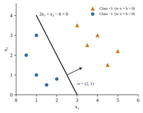
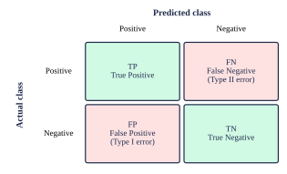

Take $w=(2,1)$ and $b=-6$, so the boundary is $2x_1+x_2-6=0$.
| Point x | z = 2x₁ + x₂ − 6 | Sign | Predicted class | Distance |z| / ‖w‖ (‖w‖ = √5) |
|---|---|---|---|---|
| (4, 3) | 8 + 3 − 6 = 5 | + | +1 | 5 / 2.236 = 2.236 |
| (3, 2) | 6 + 2 − 6 = 2 | + | +1 | 2 / 2.236 = 0.894 |
| (1, 1) | 2 + 1 − 6 = −3 | − | −1 | 3 / 2.236 = 1.342 |
Point (4, 3) is classified as +1 with the highest confidence because it lies farthest from the boundary.
| Model | Rule / loss | Remark |
|---|---|---|
| Perceptron | If a point is misclassified: $w \leftarrow w+\eta\, y_i x_i,\; b\leftarrow b+\eta\, y_i$ | Converges only if data is linearly separable. |
| Logistic regression | $P(y=1\mid x)=\sigma(w\cdot x+b)=\frac{1}{1+e^{-(w\cdot x+b)}}$; minimise cross-entropy | Gives probabilities; threshold 0.5 ⇔ z = 0. |
| Linear SVM | Maximise the margin $2/\lVert w\rVert$ (Q11) | Picks the boundary with the widest gap. |
A confusion matrix is a table that compares the actual classes with the predicted classes. For a binary problem it is 2 × 2:

| Term | Meaning |
|---|---|
| TP | Actually positive and predicted positive (correct hit). |
| TN | Actually negative and predicted negative (correct rejection). |
| FP | Actually negative but predicted positive: a false alarm (Type I error). |
| FN | Actually positive but predicted negative: a miss (Type II error). |
A disease test is run on 100 patients: TP = 40, FN = 10, FP = 5, TN = 45 (50 actually diseased, 50 healthy).
Good when classes are balanced; misleading when they are imbalanced (Q3).
Important when a false positive is costly, e.g. a spam filter must not send a genuine mail to spam.
Important when a false negative is costly, e.g. missing a cancer patient.
A single score that is high only when both precision and recall are high. The general form is $F_\beta=\frac{(1+\beta^2)PR}{\beta^2P+R}$; β > 1 weights recall more, β < 1 weights precision more.
| Measure | Formula | Example value |
|---|---|---|
| Specificity (TNR) | $TN/(TN+FP)$ | 45 / 50 = 0.90 |
| False Positive Rate | $FP/(FP+TN)$ = 1 − specificity | 5 / 50 = 0.10 |
| Error rate | $(FP+FN)/\text{Total}$ = 1 − accuracy | 15 / 100 = 0.15 |
| ROC-AUC | Area under TPR vs FPR curve over all thresholds | 1 = perfect, 0.5 = random |
The paper gives a 2 × 2 table with Actual Values (Cancer, No Cancer) across the top and Predicted Values (Cancer, No Cancer) down the side. "Cancer" is the positive class.
| Actual Values | Row total | |||
|---|---|---|---|---|
| Cancer | No Cancer | |||
| Predicted Values | Cancer | 45 (TP) | 18 (FP) | 63 |
| No Cancer | 12 (FN) | 25 (TN) | 37 | |
| Column total | 57 | 43 | 100 | |
| Measure | Formula | Value |
|---|---|---|
| Specificity | TN / (TN + FP) = 25 / 43 | 0.5814 |
| False Positive Rate | FP / (FP + TN) = 18 / 43 | 0.4186 |
| Error rate | (FP + FN) / Total = 30 / 100 | 0.30 |
| Accuracy | Precision | Recall | F1-score |
|---|---|---|---|
| 0.70 | 0.7143 | 0.7895 | 0.75 |